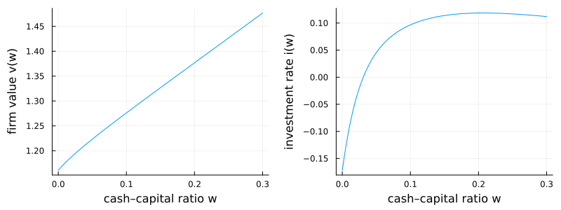

Bolton–Chen–Wang (2009): investment with costly external finance
Bolton, Chen, and Wang build a unified theory of investment, financing, and cash management. A firm faces costly external finance, so it hoards cash as a buffer against shocks. The single state is the cash–capital ratio $w$, and the unknown is firm value per unit of capital $v(w)$ — a generalized Tobin's $q$. It solves the HJB equation
\[r\,v(w) = \max_{i}\;(i-\delta)\bigl(v - w\,v'\bigr) + \bigl((r-\lambda)w + A - i - \tfrac{\theta}{2}i^2\bigr)v' + \tfrac{\sigma^2}{2}v'',\]
with optimal investment $i = \tfrac{1}{\theta}\!\left(\tfrac{v}{v'} - w - 1\right)$. Two endogenous boundaries close the model: a payout boundary, where the marginal value of cash $v'$ falls to one, and a refinancing boundary, where the firm issues equity at marginal cost $\gamma$ and fixed cost $\phi$.
The model
The parameters:
using EconPDEs, NLsolve, Plots
Base.@kwdef struct BoltonChenWangModel
r::Float64 = 0.06 # risk-free rate
δ::Float64 = 0.10 # depreciation rate of capital
A::Float64 = 0.18 # productivity (expected profitability per unit capital)
σ::Float64 = 0.09 # cash-flow (capital) volatility
θ::Float64 = 1.5 # investment adjustment-cost parameter
λ::Float64 = 0.01 # carrying cost of holding cash
l::Float64 = 0.9 # liquidation value of capital
γ::Float64 = 0.06 # marginal (proportional) cost of external finance
ϕ::Float64 = 0.01 # fixed cost of external finance
endMain.BoltonChenWangModelThe state space
We build the grid and the initial guess first, because they fix the names used everywhere else. The grid is a NamedTuple whose key is the state variable (w, the cash–capital ratio); the guess is a NamedTuple whose key is the unknown function (v), holding one starting value at each grid point (firm value is initialized to the cash ratio $w$ itself). These names are what reappear inside the equation below — e.g. vw_up will be the forward finite difference of v in w.
m = BoltonChenWangModel()
stategrid = (; w = range(0.0, 0.3, length = 100))
guess = (; v = stategrid[:w])(v = 0.0:0.0030303030303030303:0.3,)The equation
We now write the function encoding the HJB equation. Following the package convention, it takes the current state (a grid point) and u — the local bundle holding the unknown and its finite-difference derivatives there (v, vw_up, vw_down, vww) — and returns the time derivative vt.
The cash drift $\mu_w$ can point either way, so the marginal value of cash is upwinded: forward (vw_up) where the drift is positive, backward (vw_down) where it is negative.
function (m::BoltonChenWangModel)(state::NamedTuple, u::NamedTuple)
(; r, δ, A, σ, θ, λ, l, γ, ϕ) = m
(; w) = state
(; v, vw_up, vw_down, vww) = u
vw = vw_up
iter = 0
@label start
i = 1 / θ * (v / vw - w - 1)
μw = (r - λ) * w + A - i - θ * i^2 / 2 - (i - δ) * w
if (iter == 0) && (μw <= 0)
iter += 1
vw = vw_down
@goto start
end
vt = - ((i - δ) * (v - vw * w) + ((r - λ) * w + A - i - θ * i^2 / 2) * vw + σ^2 / 2 * vww - r * v)
return (; vt), (; v, vw, vww, w)
endWe first solve the HJB with guessed slopes for the marginal value of cash at the two boundaries.
result = pdesolve(m, stategrid, guess; bc = (; vw = (1.5, 1.0)))EconPDEResult
zero: v (100)
saved: v, vw, vww, w
residual_norm: 6.449395134401148e-10The guessed slopes are only a starting point. We then use NLsolve to find the boundary slopes that satisfy the value-matching and optimality conditions of Bolton–Chen–Wang (2009) — one at the refinancing boundary (marginal value of cash $1+\gamma$) and one at the payout boundary (marginal value of cash $1$) — and re-solve at the fixed point.
function f(m, x, stategrid, y)
result = pdesolve(m, stategrid, y; bc = (; vw = (x[1], x[2])), verbose = false)
v, vw, w = result.saved[:v], result.saved[:vw], result.saved[:w]
out = zeros(2)
mi = argmin(abs.(1 + m.γ .- vw))
out[1] = v[mi] - m.ϕ - (1 + m.γ) * w[mi] - v[1]
wi = argmin(abs.(1 .- vw))
i = 1 / m.θ * (v[wi] - w[wi] - 1)
out[2] = m.r * v[wi] - (i - m.δ) * (v[wi] - w[wi]) - ((m.r - m.λ) * w[wi] + m.A - i - m.θ * i^2 / 2)
return out
end
newsol = nlsolve(x -> f(m, x, stategrid, guess), [1.0, 1.0])
result = pdesolve(m, stategrid, guess; bc = (; vw = (newsol.zero[1], newsol.zero[2])))EconPDEResult
zero: v (100)
saved: v, vw, vww, w
residual_norm: 6.110136493494876e-10The solution
Firm value $v(w)$ is increasing and concave in the cash–capital ratio: an extra dollar of internal cash is worth more than one ($v'(w)>1$) because external finance is costly, and this marginal value declines as the buffer grows. Investment $i(w)$ rises with cash, so a cash-poor firm underinvests — internal liquidity, not just fundamentals, drives real investment. Both panels use the solution at the boundary slopes pinned down by NLsolve.
ws = stategrid[:w]
v = result.saved[:v]
vw = result.saved[:vw]
i = (v ./ vw .- ws .- 1) ./ m.θ
p1 = plot(ws, v; xlabel = "cash–capital ratio w", ylabel = "firm value v(w)", legend = false)
p2 = plot(ws, i; xlabel = "cash–capital ratio w", ylabel = "investment rate i(w)", legend = false)
plot(p1, p2; layout = (1, 2), size = (800, 300))
This page was generated using Literate.jl.